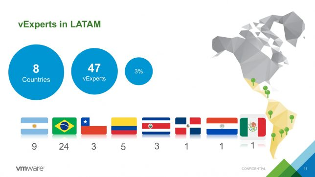
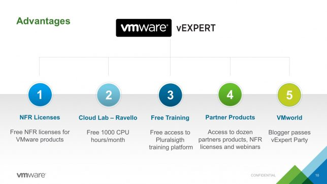

Estão abertas as inscrições para o programa VMware vExpert 2018 - Segunda Turma
#vCommunity vExpertCompartilhe esse post nas redes sociais...
Olá Homelabers,
As inscrições para o programa de evangelistas da VMware – vExpert 2018 Segundo Semestre já estão abertas (desde o dia 18/06/18). O prazo para inscrição é até o dia 13 de julho de 2018 31 de julho de 2018.
Mas o que é o vExpert?
Muita gente ainda tem a idéia de o vExpert é algum tipo de CERTIFICAÇÃO ou ainda que para aplicar, precise ser VCP, VCAP, etc. A resposta é NÃO! O programa vExpert não é uma certificação e sim um programa criado pelo Marketing da VMware para e suportar a COMUNIDADE.
Assim como o vExpert, existem diversos outros programas semelhantes: Microsoft MVP, Cisco Champion, Veeam Vanguard e a lista segue…
Para participar do programa, você precisa apenas participar e contribuir com a comunidade.
Hoje no Brasil somos em 24 vExperts, um número muito pequeno em relação ao potencial e importância do Brasil - veja quem são os vExperts do Brasil aqui e de acordo com as minhas pesquisas e conversas, esse número é pequeno por falta de divulgação do programa.

Mas contribuir como?
É simples, muito mais simples do que você imagina.
* Se você tem um blog e fala de VMware, já está contribuindo com a comunidade.
* Se você tem ou participa de um Podcast e fala de VMware, já está contribuindo com a comunidade
* Se você faz palestras em eventos - online ou presenciais, já está contribuindo com a comunidade. vBrownbag Brasil e o VMUG contam heim!
* Se você trabalha em parceiro VMware e fala de VMware para seus clientes, já está contribuindo para a comunidade.
* Se você tem ou participa de um grupo/forum sobre Virtualização, já está contribuindo para a comunidade.
Eu poderia ficar até amanhã escrevendo uma lista de maneiras de contribuir e principalmente retribuir para a comunidade, mas você já deve ter entendido o espírito da coisa.
Tá, mas porque fazer parte do vExpert?
Aqui você vai encontrar uma lista de benefícios (ainda está em Inglês, mas a localização para o Português já está em andamento), mas para simplificar vou deixar um slide para vocês.

Mas esses são os benefícios “materiais” - Licenças, Lab da Ravello, Treinamento da Pluralsight, Passe para VMworld, etc não são realmente os melhores benefícios e muito menos a razão pela qual você vai aplicar.
Os reais benefícios na minha opinião, são outros. Eu sou a prova viva de que PERTENCER a essa comunidade influenciou MUITO a minha vida - vejam só onde eu trabalho hoje!
Vou listar só alguns…
* Conhecer um **número enorme de pessoas inteligentes**
* Realmente aprender o que é uma comunidade
* Ter acesso aos caras mais fodões de VMware para tirar dúvidas
* Contribuir com a melhoria dos produtos que usamos no dia a dia
* Ser reconhecido pelos seus pares
* Criar a sua imagem pessoal na comunidade
* Fazer parte do [VMUG](http://homelaber.com.br/vmug-vmware-user-group-grupo-de-usuarios-vmware/)
* [Iniciar o VMUG em SP](http://vmugsp.com.br/)
* Participar da [VMworld 2016](http://homelaber.com.br/vmworld-2016-resumao-da-vmworld-parte-1-o-que-acontece-em-vegas-nao-fica-em-vegas/)
* Participar da [VMworld 2017](http://homelaber.com.br/vmworld-2017-eu-vou/)
* Participar da VMworld 2018
* Iniciar o vBrownbag Brasil
* Melhorar meus skills técnicos e não técnicos
* Melhorar meu Inglês
* Progredir na sua carreira - Hoje eu trabalhar na VMware US com COMUNIDADES.
* e a lista vai….
Eu já falei bastante aqui no blog, o que significa ser um vExpert para mim, recomendo que você dê uma olhada nesse post.
Mas acredito que nada resume mais o retorno que se tem ao participar de uma comunidade do que esse post do Ricardo Conzatti, que em resumo conta o que aconteceu na vida e na carreira dele depois que ele começou a se envolver mais com a comunidade. Spoiler: Ele está indo a sua segunda VMworld e ainda vai palestrar.
Como se inscrever?
Antes de eu mostrar como fazer sua inscrição, leia esse post onde dou varias dicas sobre o que escrever na sua inscrição.
E se você ainda não está confortável ou tem alguma dúvida, venha falar comigo que eu te ajudo!
Acesse o site https://vexpert.vmware.com/

Crie o seu perfil


Faça o login no site

Atualize o seu perfil

Preencha o formulário

Clique em Submit

Apliquei e agora?
Bom, agora é aguardar até o dia 09 de agosto (eu sei, é difícil), data em que serão divulgados os selecionados.
Mais uma vez, me coloco a disposição para te ajudar no que for em relação a sua aplicação.
Se você acha que ainda não está pronto, não desanime, aplique mesmo assim! Vai ser um aprendizado.
Boa sorte!
Compartilhe esse post nas redes sociais...Valdecir Carvalho
Nerd e pai orgulhoso da Mariana e João. Profissional Sênior de TI com foco em arquitetura de infraestrutura e cloud computing. Blogueiro, podcaster, palestrante, amante de comunidades técnicas, fotógrafo aposentado e adora jogos antigos.
#vExpert · #VMUGLeader · #VUGBrasil · #vBronwBagBrasil · #VeeamVanguard